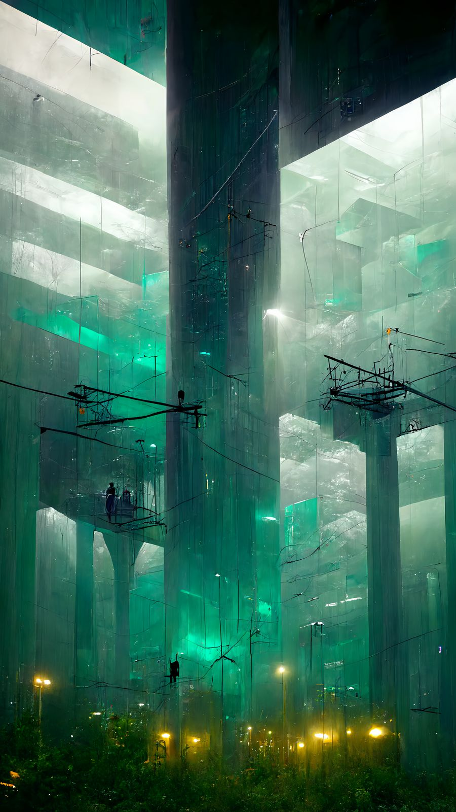
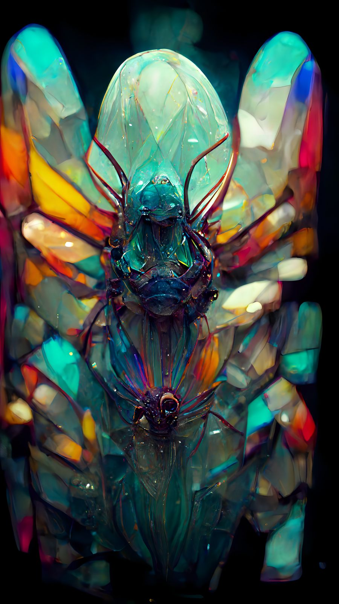
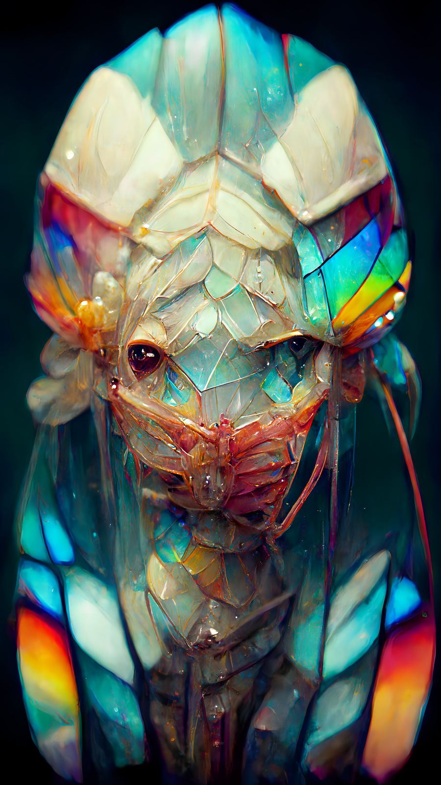
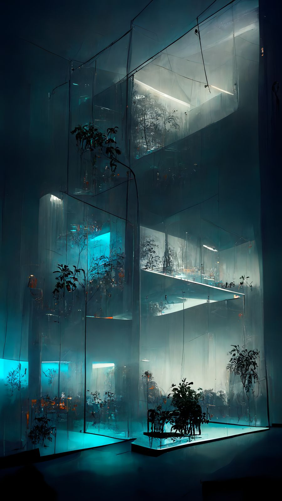
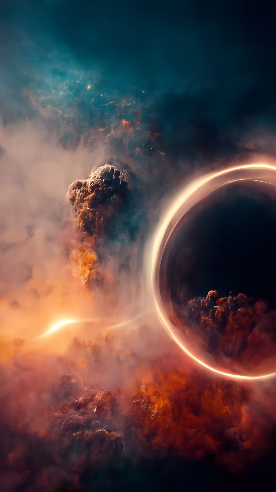
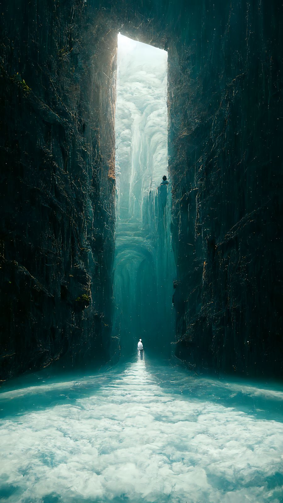
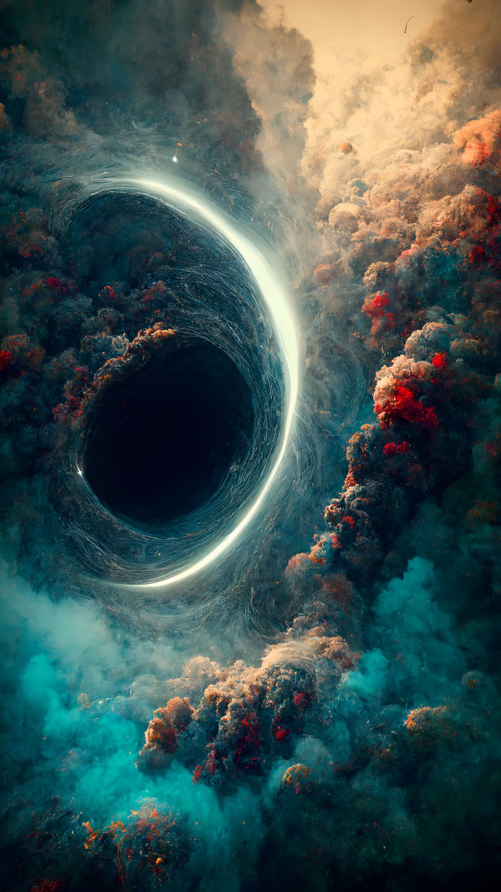
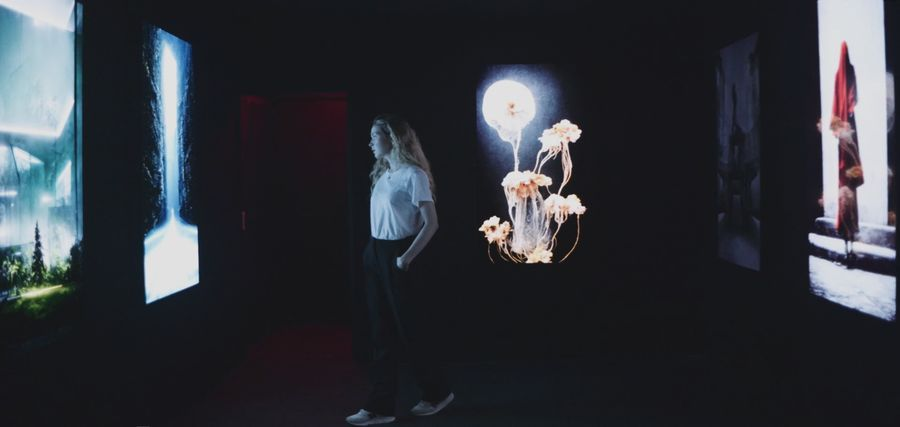
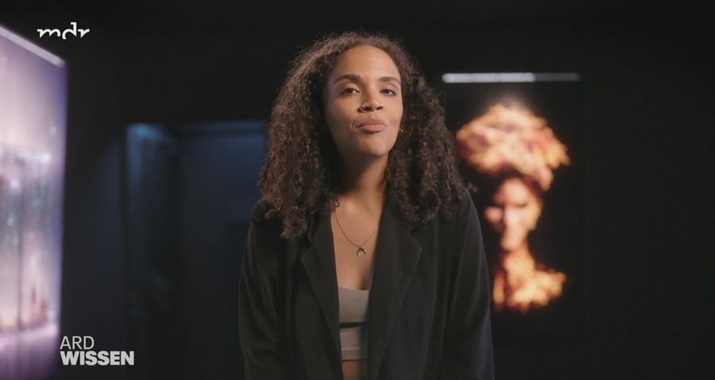
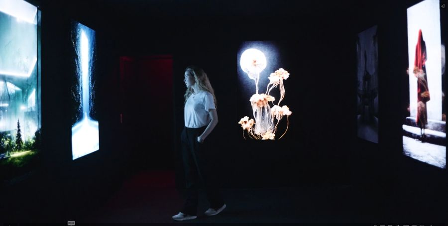

Latent Spaces
xmtry_studio & Evestrum_AV
As we perceive the world through our senses, we tend to imagine within certain constraints of possibility. We wanted to think of artificial intelligence as a tool to overcome those limits and offer a different point of view.
The machine doesn't know what is possible. It slides easily over the fringe of what we consider normal — and in doing so, it fuels the artist's ability to reach the cognitive emotion of surprise.
Latent Spaces presents a selection of unaltered results from the various AI creative tools we researched and used over several months. Nothing was retouched: what the machine produced is what is shown, projected at scale across the walls of The Lighthouse of Digital Art in Berlin.
The exhibition was later featured in the ARD Wissen documentary Better Than Human — Leben mit KI.
- PresentationLarge-scale projection across the gallery walls
- MethodUnaltered output from a research process across multiple generative tools
- UpscalingBSRGAN, 4×
- Collaborationxmtry_studio — Francesco Della Toffola
- BroadcastARD Wissen, Better Than Human — Leben mit KI, 2023










Credits
- Concept & researchFrancesco Della Toffola (xmtry_studio) & Emanuele Musca (Evestrum_AV)
- VenueThe Lighthouse of Digital Art, Berlin
- PressARD Wissen — Better Than Human: Leben mit KI